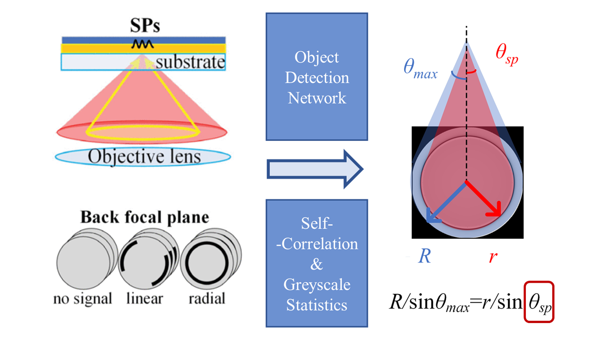

Automatic Surface Plasmon Microscopy based on Object Detection Network
Surface Plasmon Microscopy (SPM) features both high sensitivity and resolution. This work aimed to automatically conduct SPM measurements on batch of images. To do this, object detection networks (Faster R-CNN, SSD, YOLO) were used to classify and localize surface plasmon profiles.
Publications:
- B. Zhang, H. Tian, T. Xiao and J. Zhang, "Instrumentation of Surface Plasmon Microscopy: Complete Scheme of Signal Extractions," in IEEE Transactions on Instrumentation and Measurement, vol. 70, pp. 1-10, 2021, Art no. 7003710, doi: 10.1109/TIM.2021.3072137.